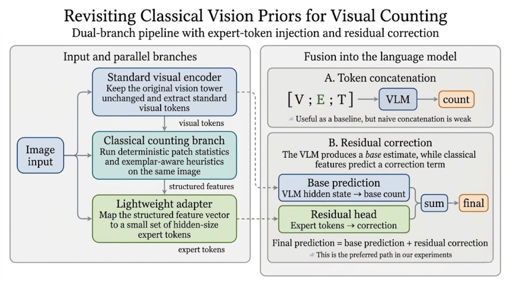
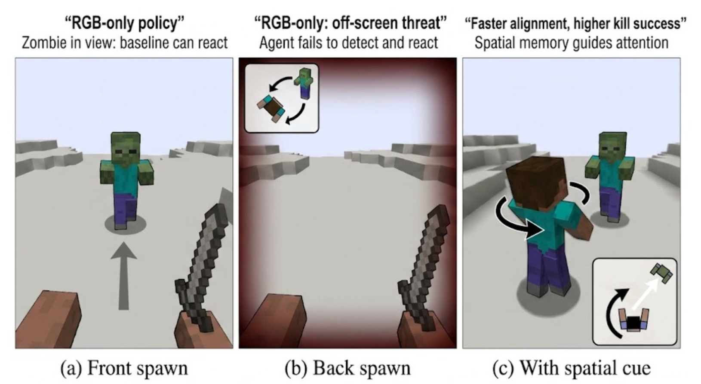
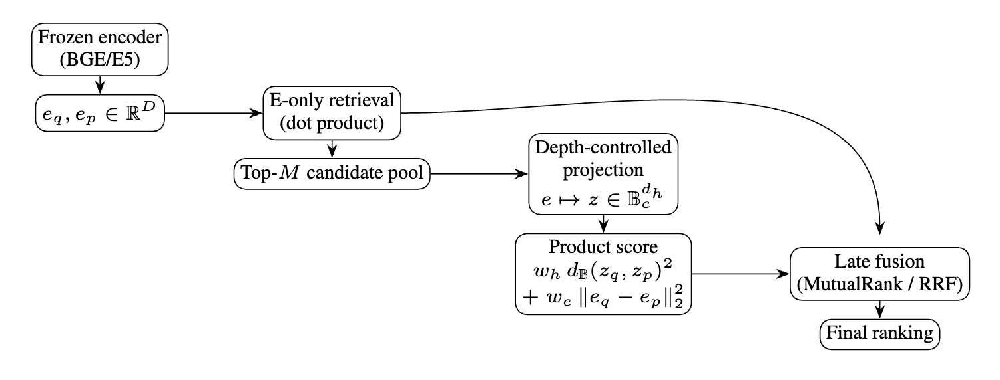
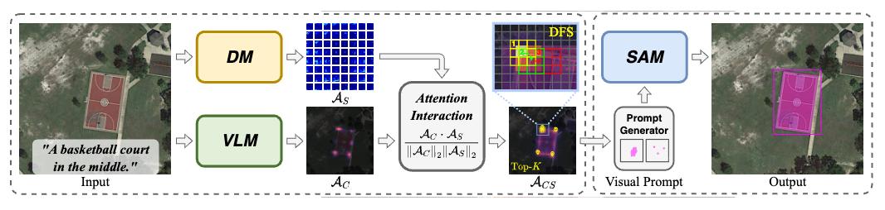
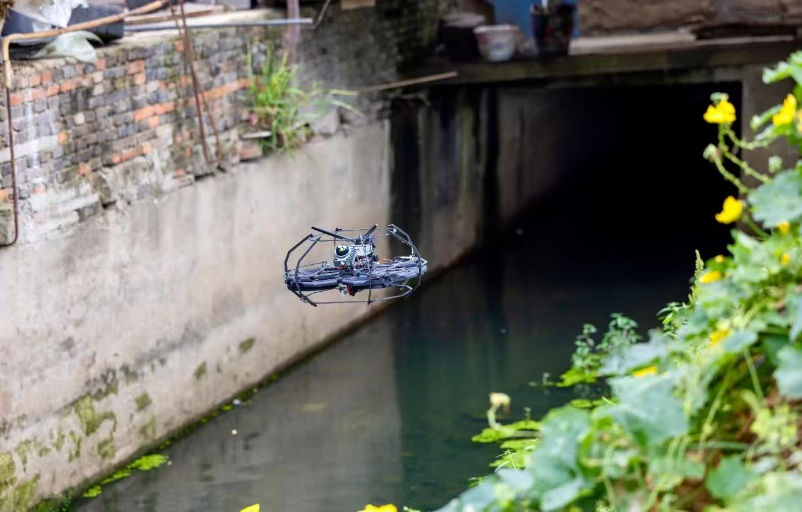

About Me
I am an undergraduate student at Xidian University (西安电子科技大学). My research interests include computer vision, machine learning, and multi-modal models.
Recent Activities
- Apr 2026 Started development with Apple Vision Pro for hand-tracking-based dexterous hand simulation.
- Feb 2026 Explored spatial-audio-aware agents, focusing on using 3D audio cues for embodied perception and decision-making.
- Dec 2025 Worked on hyperbolic retrieval methods for frozen text embeddings and reranking.
- 2025 Worked on RSVG-ZeroOV, a research project related to open-vocabulary referring image segmentation / grounding.
Selected Research
Recent papers and ongoing projects.
-
Revisiting Classical Vision Priors for Visual Counting in Vision-Language Models

A controlled study on how classical counting cues can be injected into vision-language models. The work compares several integration strategies and shows that structured residual correction is more effective than naive token-level fusion for dense visual counting. -
Audio-Inspired Spatial Proxy Conditioning for Zombie Defense in Minecraft

This project augments a video-pretrained Minecraft agent with a compact spatial side signal encoding bearing, distance, and visibility. The goal is to help the policy acquire off-screen threats more reliably in zombie-defense tasks. -
Decoupling Semantics and Specificity: Depth-Controlled Hyperbolic Reranking on Frozen Embeddings

A lightweight reranking framework for frozen embedding models that maps representations into a depth-controlled hyperbolic-Euclidean product space. The method separates semantic direction from hierarchical specificity to improve hierarchy-aware retrieval without updating the base encoder. -
RSVG-ZeroOV: Exploring a Training-Free Framework for Zero-Shot Open-Vocabulary Visual Grounding in Remote Sensing ImagesAAAI 2026.

A training-free framework for remote sensing visual grounding that combines vision-language attention, diffusion-based structural refinement, and attention evolution to localize open-vocabulary targets without task-specific fine-tuning. -
Autonomous Underground Mine Scanning and Mapping Drone

Development of an autonomous drone system for 3D scanning and mapping of underground mine environments. The system integrates multi-sensor fusion for navigation in GPS-denied environments.
Education
Xidian University (西安电子科技大学)
人工智能学院 智能科学与技术专业
2023 - 2027 (Expected)